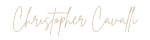

Brasserie · Pizzeria · Pub · Cannes
Le
Meynadier
Pizzas signatures, bières pression et
cocktails au cœur du vieux Cannes.
lemeynadier.fr

Designed by

Brasserie · Pizzeria · Pub · Cannes
Pizzas signatures, bières pression et
cocktails au cœur du vieux Cannes.
